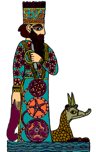

The Challenge -
Marduk in the city of Babylon

Marduk was the son of Ea, the god of wisdom. He was so powerful that he created waves in the salt ocean. The salt ocean, who was called Tiamat, became angry and decided to destroy the other gods. She created a vast army of demons with poisonous teeth. The other gods agreed that Tiamat should be killed, but they were all afraid. However, the young god Marduk offered to defeat Tiamat but only if he was made king of the gods. Marduk managed to kill Tiamat and, to make heaven and earth, he cut her body in half. From her eyes flowed the rivers Tigris and Euphrates. The gods made Marduk their king and, to thank him for defeating Tiamat, built him the city of Babylon.
|
|